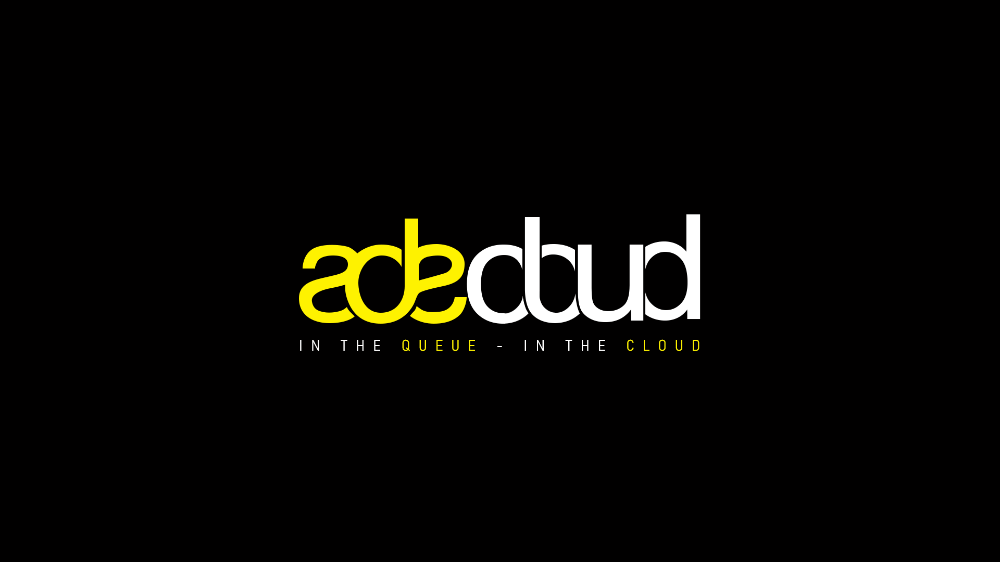
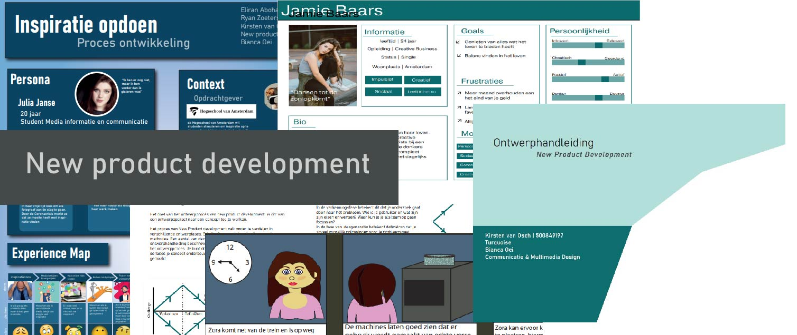
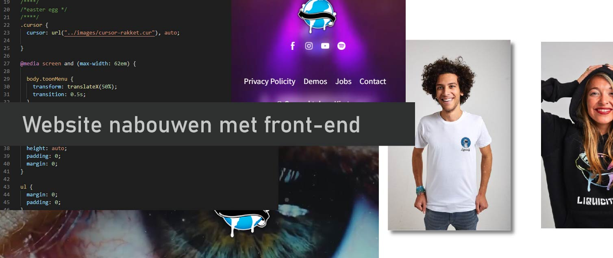

Over Mij
Dromen, durven, doen! De weg richting CMD en een toekomst binnen front-end development en UX design was geen gemakkelijke weg, maar wel een hele leerzame weg
Ik ben Kirsten van Osch en ik ben student Communicatie en Multimedia design aan de Hogeschool van Amsterdam. Momenteel zit ik in mijne 2e jaar van de opleiding. Tijdens mijn opleiding heb ik ontdekt dat front-end development me heel erg aanspreekt en zou dit graag verder willen onderzoeken
Skills en Tools
- HTML
- CSS
- Adobe Illustrator
- Adobe After effects
- Adobe XD
- JavaScript
Mijn Werk

ADE powered by Soundcloud
Bij dit project heb ik een totaalervaring ontworpen voor Amsterdam Dance Event in samenwerking met Soundcloud. Bij dit project heb ik kennis gemaakt met video editing.
Youtube video van het eindresultaat

New Product design Ontwerphandleiding
Dit project...

Front-end development
Ik heb een bestaande website nagebouwd in HTML, CSS en JavaScript. Tijdens dit vak heb ik de liefde voor code schrijven bevestigd gekregen.
Github